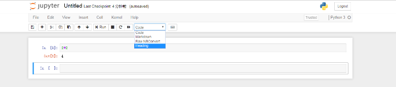

Notebook入门指南¶
Jupyter Notebook （此前被称为 IPython notebook）是一个交互式笔记本，支持运行 40 多种编程语言。
Jupyter Notebook 的本质是一个 Web 应用程序，便于创建和共享文学化程序文档，支持实时代码，数学方程，可视化和 markdown。 用途包括：数据清理和转换，数值模拟，统计建模，机器学习等等。
本文用最少的时间带你进入Notebook的大门。建议一边学习，一边在 BigLab_ 在线开发环境里实践。
Notebook启动页面¶
新建一个notebook¶
鼠标点击右上角的 New 按钮，在下拉选项中选择想启动的notebook内核。
注解
本教程默认选择启动Python内核来进行演示。
Python notebook的初始化页面：
notebook主要由以下部分组成：
- notebook名字
- 主菜单栏，包括notebook的保存、重载、重启内核、导出等
- 快捷键
- notebook编辑区
可以点击菜单栏右侧的Help按钮作进一步的了解。
单元操作¶
在编辑区，可以看见一个个单元（cell），以 ln[] 开头的就是一个代码单元。在代码单元里，可以输入任何代码并执行：
注意
notebook可以返回之前的cell进行修改并重新运行。
cell的功能有很多，还可以输入其他形式：

notebook提供了丰富的cell操作，可以对cell进行复制、剪切、删除等操作：
Markdown¶
通过选择cell的Markdown或Heading可以添加标题：
重要
只有六级标题。
结合cell的不同功能，可以编写优美的notebook：
Markdown同时也支持HTML代码：
notebook绘图¶
利用Python的库Matplotlib画图：
notebook的命名¶
点击 Untitled 对notebook进行重命名：